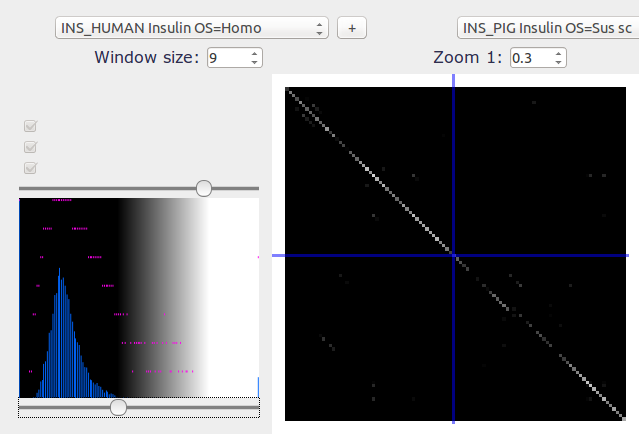

Conserved domains
The result below corresponds to a plot of human insulin compared with porcine insulin. The matrix comparison chosen is blosum 62 and the window size is 9. We can see some fragment of the diagonal, corresponding to the conserved domains. The shift shows a deletion in the porcine sequence. 